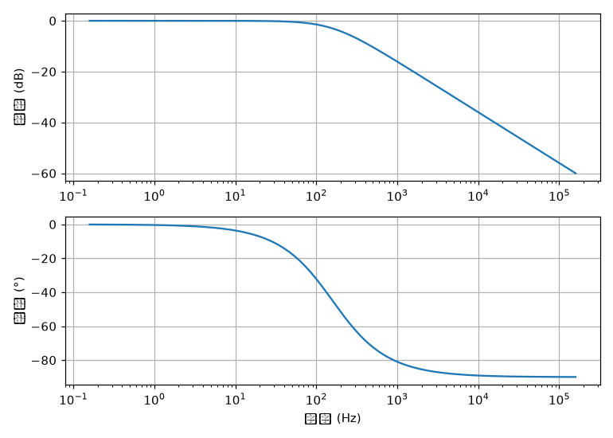

| 类别 | 工具 | 状态 | 证据 / 说明 |
|---|---|---|---|
| MCU 编译 | arm-none-eabi-gcc 12.3 | ✅ 已验证 | 实测生成 Cortex-M3 的 blink.o + blink.bin |
objcopy 生成 .bin | ✅ 已验证 | 转二进制成功 | |
PlatformIO ststm32 平台 | ✅ 已预下载 | ststm32@19.7.0 + toolchain-gccarmnoneeabi@1.70201.0 已装（上轮"核心空"已补） | |
| MCU 烧录/调试 | OpenOCD + ST-LINK_gdbserver | 🟡 在场未测 | 工具在 CubeIDE 内，板子没插连不上 |
| STM32CubeProgrammer（独立救砖） | 🔵 需手动 | ST 安装包要走 my.st.com 登录，直链 404，见第六节 | |
| 串口 | VS Code Serial Monitor 插件 | ✅ 已装 | vscode-serial-monitor 0.13.1 |
Python pyserial | ✅ 已装 | pyserial 3.5，import serial 通过 | |
| 电路分析 | lcapy（符号/数值电路分析） | ✅ 已验证 | 节点电压/运放增益/传递函数全跑通（见下图） |
| numpy / scipy / matplotlib | ✅ 已装 | 数值计算与绘图底座 | |
demo 脚本 circuit_demo.py | ✅ 已验证 | 同目录可复跑 | |
| 电路模拟 | LTspice（SPICE 仿真标准） | 🔵 已下待装 | 60MB 已下到 Downloads/LTspice64.exe，双击即装（沙箱拦了执行） |
| 在线：Tinkercad Circuits | ⚪ 免装 | 浏览器里仿真 Arduino + 基础模拟电路，零安装 | |
| 在线：Wokwi / 立创EDA 仿真 | ⚪ 免装 | Wokwi 跑 Arduino 代码；立创EDA 网页版带 SPICE 仿真 | |
| 驱动 | ST-Link 驱动 | 🔴 未注册 | 驱动商店无 STMicro 条目；需管理员跑 dpinst_amd64.exe（插板后 Windows 可能自动装） |
| 硬件 | 蓝 Pill + ST-Link + USB-TTL | 🔴 未接入 | 设备管理器当前无任何 ST-Link / COM |
circuit_demo.py 实测输出：

图：RC 低通伯德图（幅频 + 相频），由 lcapy 取 H(s) + numpy 计算绘制。可直接复用于你的模电/电路分析作业。
.tran/.ac 指令 → 跑瞬态/交流扫描。最适合运放、电源、滤波器、开关电源仿真——你之前洞洞板的运放电路先在这仿真再焊，省料。C:\Users\cxx\Downloads\LTspice64.exe（已下好，无需管理员，装到用户目录）。C:\ST\STM32CubeIDE_1.16.1\STM32CubeIDE\drivers\STLinkUSBDriver（或管理员跑其中 dpinst_amd64.exe）。| 项 | 做法 | 通过标准 |
|---|---|---|
| 识别 | 设备管理器 + mode 看 COM | ST-Link 设备 + COMx，无叹号 |
| 连芯片 | OpenOCD/CubeIDE 读 Chip ID | 读到 STM32F103C8T6 |
| 烧录 | CubeIDE 烧闪灯程序 | 蓝 Pill LED 闪 |
| 调试 | 断点/单步/看变量 | gdbserver 连上能停能看 |
| 串口 | 程序 printf → 串口监视器收 | 监视器看到打印 |
https://www.st.com/en/development-tools/stm32cubeprog.htmlen.stm32cubeprog_xxx_x86_64.exe（约 50MB）说明：日常烧录 CubeIDE 自带功能已够；只有把 boot 引脚搞错锁死芯片时，才必须用 CubeProgrammer 做 mass erase 救回。非必需，先放着。
本页与《工具链能力矩阵.html》配合使用：那页讲"MCU 工作流到哪一步"，本页讲"电路分析/模拟 + 本轮补齐项"。所有"已验证"均附带实测输出或产物（rc_bode.png / blink.bin）。